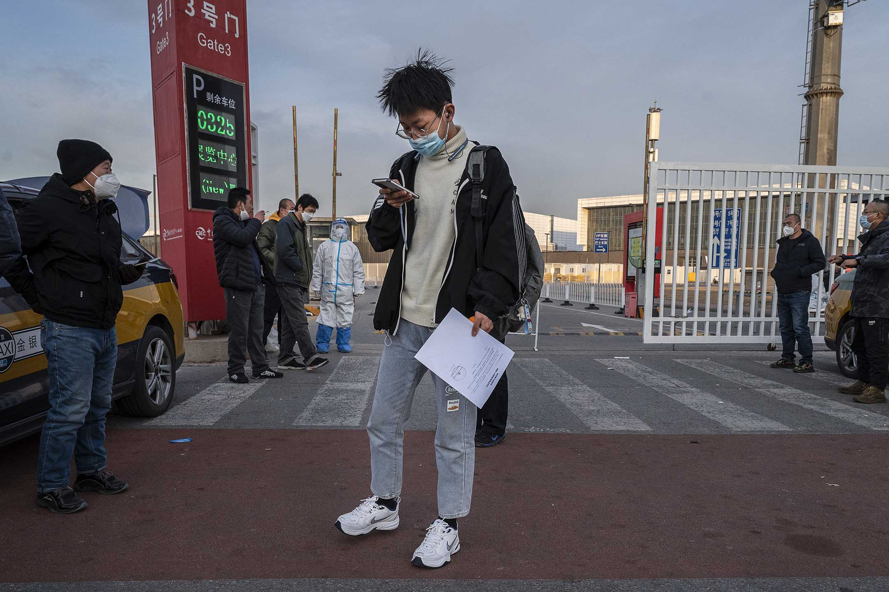
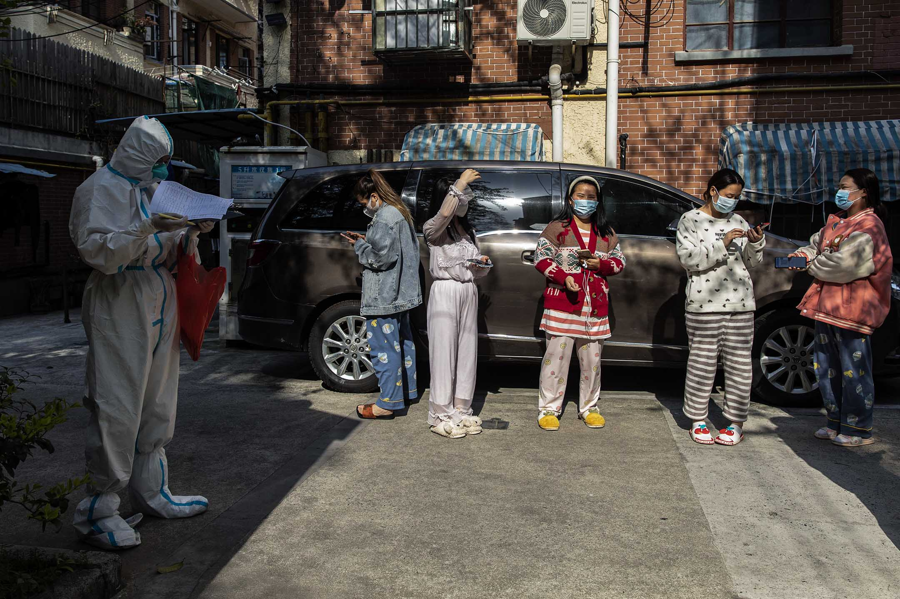
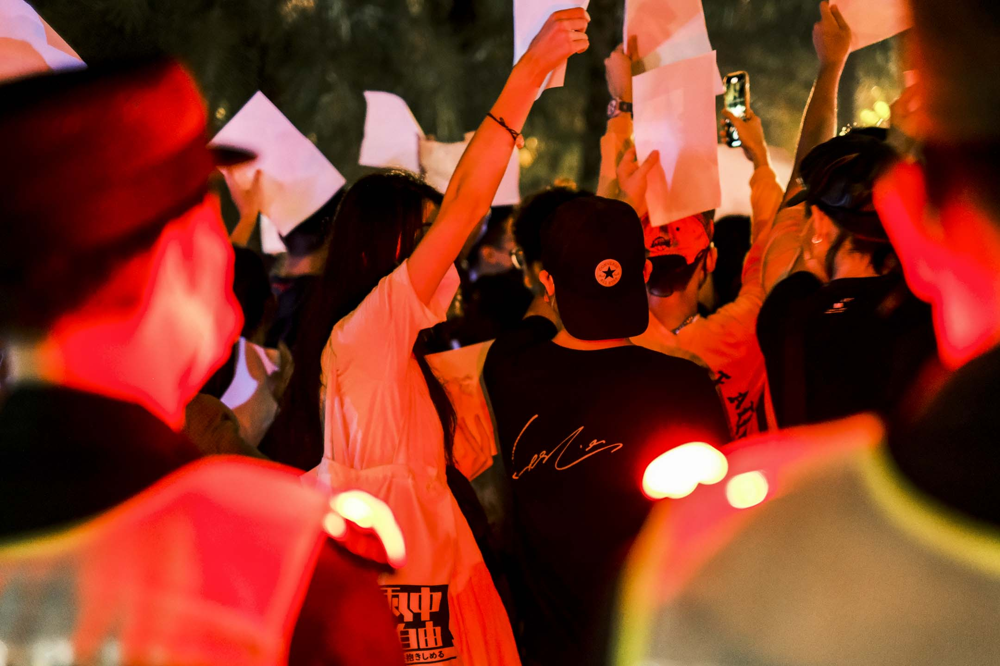

「白紙抗議」中的地域想象：只有「外地人」才會上街？｜端傳媒 Initium Media
Table of Contents
最近十年，在社會輿論中，具有一定權利意識、乃至組織度的「業主」一詞似乎正在退場，白領群體好像正在變得貧困化、散沙化。
Figure 1: 2022年11月27日，北京，人們聚集在一起守夜並舉著白紙抗議政府防疫政策，同時紀念烏魯木齊火災中的遇難者。攝：Thomas Peter/Reuters/達志影像
楊雲松
刊登於 2022-12-09
楊雲松，中國社會觀察者
在這次「白紙抗議」中，參與者除了高校學生，不難看到在很多城市中，市民也是抗議的主力。他們是誰？一種來自親體制意見領袖的陰謀論認為，「本地 人」都是只想好好過日子的，參加抗議的都是「受境外勢力操縱的『殖人』」（甘願中國成為殖民地的人），他們不說本地方言而說普通話（甚至還帶有「港台口 音」）就是一種明證，至少在廣州、成都都有類似言論流傳。
而在去年5月成都第四十九中學生墜亡事件中，類似的「抓漢奸」話術其實就已經出現。把這種陰謀論放置在中國互聯網上長期以來就存在的地域刻板印象之下，我們可以看到更多有趣的側面。

Figure 2: 2022年12月7日，北京，一名男子攜帶政府的文件從隔離的地方離開。
「後清」的旗人社會
大城市原住民子弟如果願意，找一個本地的低端「皇糧」工作並不太困難，再加上家裏原本就相對充裕的不動產資產，這些人仍然可以過一種與之前差異不大的、寄生於帝國體制之上的生活。
在中國互聯網上有一個流傳多年的比喻，將中華人民共和國稱為「後清」。不同的人使用這個比喻有不同的出發點，但本文作者傾向於從社會結構的層面來使用它。
有清一代，旗人依靠祖先「從龍入關」的功業，成為世襲的終身皇糧階級，他們不僅在血緣上是封閉的，甚至在生活空間（滿城）上都是封閉的。這很容易令 人想起中華人民共和國的大院子弟（幹部子弟，尤其是黨政系統和軍隊出身的幹部子弟，俗稱太子黨、紅二代、紅三代），他們同樣出生自建立了政權的「功臣」群 體，生活在封閉的空間裏，血緣上相對封閉，有穩固的共同體意識，雖然沒有明文規定他們能世襲父輩的工作，但實際上他們可以這麼做-–—文化大革命初期最重要 的一個現象，就是北京的一群大院子弟組建紅衛兵來捍衛自己「老子英雄兒好漢」的特權，他們後來被稱為「保皇派紅衛兵」，薄熙來就是這個群體的重要代表。
而實際上他們有點多慮了，無論是文革中還是文革後，這種特權的確都被保留了下來（甚至一些父輩被打倒的子弟都可以得到蔭庇），文革期間大院子弟們普 遍可以從軍（正如同旗人一樣），文革後選擇則更加多元化，既可以從軍從政進國企，也可以「下海」利用家裏的人脈資源成為「紅頂商人」。
城市裏除了紅色「旗人」（大院子弟以及他們的幹部父輩）外，也存在一個類似清朝的「包衣」的階層，那就是各種機關以及官辦工廠裏的工人/職工。他們 的出身相對多元，有些在1949年前已經在城市中工作，有些則是1949年後通過「招工」進入這一隊伍的。他們的工作理論上也是終身制的，但工資待遇遠遠 低於幹部，而且他們的社會資本也比干部少得多-–—雖然從名義來說，以馬克思主義為指導思想的國家裏工人應當居於領導地位。
改革開放前，紅色旗人和包衣都是「有糧本的人」，他們構成了城市人口的絕大多數，共同形成了一種與「交皇糧的人」也就是農村公社社員相對應的「城裏 人認同」。但是，幹部子弟和職工子弟的認同又有顯著的區別，他們之間不僅很少通婚，而且在語言文化上，職工階層一般來說更「本地」，幹部子弟則「五湖四 海」（當然反例總是存在的，例如西部三線建設中的職工階層往往來自東北和上海，也具有「五湖四海」屬性），後者的「本地認同」要弱得多-–—例如，出身大院 的薄熙來顯然不可能說大張偉那種北京南城本地人的方言。
但改革開放後出現了新的情況。私營經濟被容許，加上一般民衆重新獲得遷徙權，大城市裏的私營經濟從業者，不但有從生產隊返回城裏的「知識青年」，還有不少來自農村或者小城鎮的人，廣東人所謂的「外來妹」、「打工仔」就被用來代指他們。
這一時期的幹部子弟往往已經傳到了第三代，他們已經比較本土化。幹部子弟、職工子弟，以及伴隨着城市規模擴大而產生的近郊農村拆遷戶一起，構成了改革開放後與「外地人」對立的「本地人」。
在大陸社交網絡上流傳的說法中，往往有這樣的刻板印象：（大）城市本地人一般熱愛生活，在工作上野心不大，「北京的互聯網公司不招北京人」一度還引 起爭議。從某些角度來說，這些刻板印象有一定道理。雖然有了私有制，但公有制下的皇糧工作並未被廢除，大城市原住民子弟如果願意，找一個本地的低端皇糧工 作並不太困難，再加上家裏原本就相對充裕的不動產資產，這些人仍然可以過一種與之前差異不大的、寄生於帝國體制之上的生活，他們自然也就很容易產生一種親 建制的「本地人保守主義」價值觀。更進一步地說，由於大陸仍然存在戶籍制度，而且越大的城市戶籍准入就越難（最極端的就是北京，為了控制人口規模不惜「清 理低端人口」），這類「本地人保守主義」還可以實現代際傳遞，以講不講本地方言作為一種最基本的判斷標準。

Figure 3: 2022年4月7日，上海封鎖期間，居民排隊等待進行核酸測試。
「業主」的消亡-–—外地人的貧困化與散沙化
最近十年，在社會輿論中，具有一定權利意識、乃至組織度的「業主」一詞似乎正在退場，白領群體好像正在變得貧困化、散沙化。
但我們也要注意到，改革開放後的「大城市外地人」對於自己的「他者化」並非無動於衷。外地人如果粗略地分為農民工和白領兩個群體的話，我們可以看到 農民工總體而言對「成為大城市人」比較沒有信心，他們的目標一般是攢夠錢回老家村莊或小城鎮生活；白領階層一般會有「留在大城市」的心理預期。
總體而言，進入社會越早的白領面對的是一個房價相對越低的市場，也就越容易在大城市中定居。他們在大城市中構建自身認同的策略，大體可以分為兩種， 一種是從宏觀層面，自稱為「新北京/上海/廣州人」（深圳本地人社會規模太小，乾脆說「來了就是深圳人」），強調文化上的一面；另一種則是在微觀層面，在 自己買房的小區裏構建「業主」認同，更多地關乎具體利益。
中國大城市的擴張之路可以說相當粗獷。很多小區有規模過大、配套設置不足的問題（例如北京的天通苑、廣州的「華南八大金剛」），迫使業主不得不自籌 經費、自我管理-–—而這類小區的業主又往往是第一代定居大城市的外地人。2007年的《物權法》更是給了業主的行動以一定的「合法性」，各個城市一度都有 業主與地產商、物業公司「鬥法」的新聞。
在十幾年前的一些城市裏，一度被認為溫馴的白領業主們屢屢發起「散步」（遊行示威的委婉說法，同時也被稱作「鄰避運動」），對即將建設在小區附近的 道路橋樑、大型工廠可能帶來的污染問題進行抗議-–—這種抗議既是保護自己的身體健康，也是保護自己最重要的財產的市場估值-–—其中一些案例還成功迫使項目 中止。
原本母語和文化認同各異的新移民們，以小區的論壇、聊天軟件通訊群組等手段協調行動，一些熱心公益、具有一定組織能力的業主也就成為了小區裏的 KOL。他們的高光時刻，就是2011年各地出現的一批參加基層人民代表選舉的獨立候選人。事實上，文革結束後，幾乎每屆基層人大代表選舉中都有人試圖獨 立參選-–—無論是「西單民主牆」還是八六學潮，都與基層人大代表選舉有關係-–—但即便基層人大的權力極小，這些候選人也通常不會通過資格審查。在過去，獨 立參選人往往是高校學生、學者、民運人士等，但在2011年，候選人隊伍裏不乏梁樹新這種因為代表居民小區趕走垃圾焚燒廠而出名的「明星業主」，並不令人 意外的，他在競選開始前就沒有通過資格審查。
當然了，十八大後，農村裏的村委會和城市裏的業委會都被體制重新加強了控制力度，與之配套的是互聯網上愈發嚴厲的言論管治，以及各層級大幅強化的維 穩力量。更何況，由於房價的日益上升，「外地人業主」這個群體正在逐漸走向青黃不接-–—除了極少數幸運兒外，能在大城市買房的青年白領往往是依靠本身是次 級城市皇糧階層的父母的財政支援才能承擔首付，而這個群體規模正在越來越小，而且本身就受到那種「本地人保守主義」價值觀的影響，只是他們的「本地」未見 得投向目前所居住的城市罷了。
在這多個因素的影響之下，最近十年，在社會輿論中，具有一定權利意識、乃至組織度的「業主」一詞似乎正在退場，白領群體好像正在變得貧困化、散沙化。
沒有什麼比共同的苦難記憶更能塑造共同體意識的了-–—尤其是對於那種本來就沒有本地人際關係網絡的外地人而言。
但疫情帶來了陰差陽錯的後果。過去三年，官辦居委會經常指揮物業公司執行過於嚴苛的隔離政策，帶來的業主與居委會幹部/物業工作人員的矛盾遠遠比十 幾年前的鄰避運動時激烈得多（想想看北京市昌平區天通苑南街道第二居委會工作人員聲稱要以兒子為「軟肋」要挾居民激起了多大的憤怒）；但是，也恰好是由於 隔離政策的需要，住戶們（不一定是業主）被迫按照小區、樓宇、單元組建了通訊群組。群組最初是為了分享政策動態、組織團購生活物資、互相照應解決一些緊急 需求等，但隨着隔離政策的長期化，群組自然而然地變成了住戶們發泄對防疫政策不滿的公共平台。
沒有什麼比共同的苦難記憶更能塑造共同體意識的了-–—尤其是對於那種本來就沒有本地人際關係網絡的外地人而言。也許一個租房居住的上海外地人此前從 沒見過住在隔壁的另一個租戶，但他們都會記得2022年4月一起把微信頭像換成房間號，彼此調劑食物儲備的經歷。在那之後，他們不但會在電梯裏遇到時打招 呼，甚至可能成為持續多年的朋友。大多數城市的封城經驗沒有上海那麼極端，但類似的劇情在全中國是普遍存在的。在11月11日國務院公布二十條防疫新政 後，住戶們更是拿到了「尚方寶劍」，以它為依據反抗封控政策，甚至出現相當多的群體性事件。
這些群體性事件雖然沒有像「白紙抗議」那樣喊出帶有政治性的口號，但我們也可以認為它們是「白紙抗議」有機的組成部分。它為中國的白領階層（當然也 有很多其他階層人士參與）重建了一種既關乎階層，也關乎地域的認同感，以及與之對應的組織能力（雖然相當初級），並且為進一步參與到更「激烈」的行動中進 行了思想上的鋪墊。為什麼烏魯木齊火災引發的抗議除了在高校之外，在上海產生了最強烈的共鳴？這就是「四月之聲」在上海人心中刻下的記憶被「延遲播放」的 效果。

Figure 4: 2022年11月27日晚上，廣州海珠區有市民聚集，手持白紙表達對烏魯木齊火災的哀悼和對防疫防控措施的抗議。
「本地人保守主義」與「外地敵對勢力」的衝突
這種結構性的矛盾大概並不會就此消失，反而為未來的發展形成新的可能性。
本文並無意認為抗議者和反抗議者之間有絕對的「本地/外地」矛盾，但至少有相當多的反抗議者打起了「抗議者是外地人，與境外敵對勢力有勾連」的旗 號。例如在廣州，就有一些流傳在民間的視頻裏有人在圍觀「白紙抗議」（參與者較多地使用普通話）時用粵語說「廣州人怎麼會要自由呢？廣州人只想喝早茶」； 在成都也有本地博主說「成都人如果悼念死者怎麼會舉蠟燭呢，那肯定要打麻將」，並進一步懷疑「參與者說話有港台口音，大概是香港廢青/台灣間諜」。在廣 州，這甚至演化到了部分民間人士在網上打出「廣州人講廣州話，聽唔明就返鄉下」的口號。
不難看出，這些自稱「本地人」的博主，強調了以下幾點：第一，「真正的本地人」喜歡吃喝玩樂，是非政治化的，不可能參與任何反對政府的活動；第二，參與抗議的不僅不是本地人，甚至有可能連大陸人都不是；第三，保護本地語言具有某種意義上的「反間諜」意義。
我們很難確定這些人是否真的相信自己的這些陰謀論，本文作者傾向於相信他們在這種言論中並不「真誠」，他們之所以提出這類論點，是因為自己作為本地 皇糧/食利階層，至少在經濟層面上較少受到防疫封控政策的衝擊，甚至可能得益（例如可以憑藉戶籍優勢從事一些防疫相關的工作）；同時，長期的意識形態教化 讓他們本能地推測，在本地發生反政府示威，如果不是危險的，至少也是不體面的；另外，在這些人的「本地人保守主義」中，「無條件排斥外地人」本身也是一個 重要的組成部分。
防疫政策的驟然轉向，至少暫時性地讓這種潛在的階級/地域矛盾變得不再突出，一些官媒和意見領袖也開始藉着恢復交通、為基層人員提供一定便利來營造 「北京/上海/廣州其實一直就是這麼開放包容」的輿論氛圍。然而，這種結構性的矛盾大概並不會就此消失，反而為未來的發展形成新的可能性。
本刊載內容版權為端傳媒或相關單位所有，未經端傳媒編輯部授權，請勿轉載或複製，否則即為侵權。